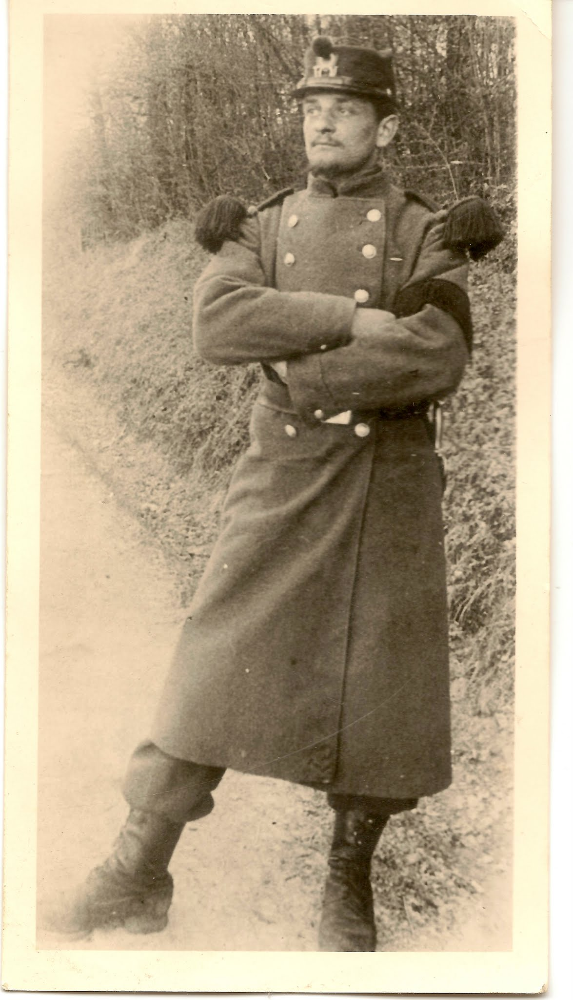
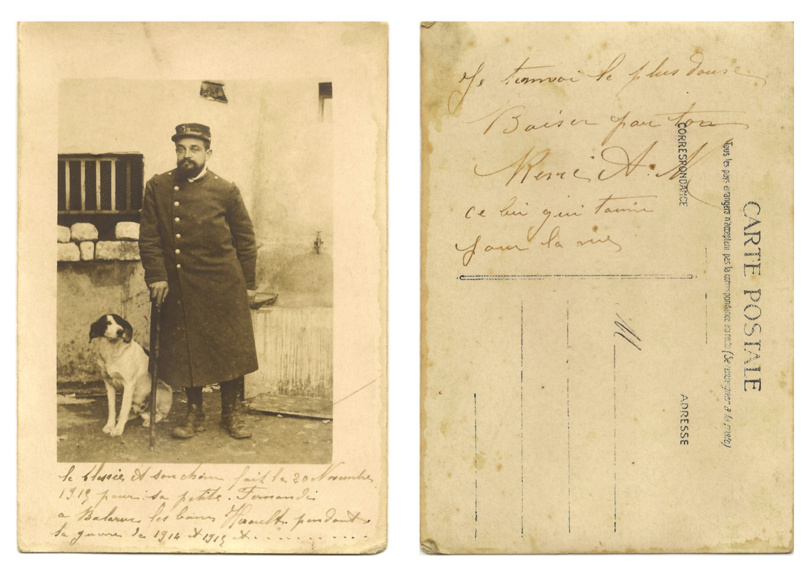

graph TD C1[Charles François Anchier<br>1852-] G1[Marie Berthe Gillet<br>1852-] Mariage[Mariage] F1[Marguerite Marie Elisa <br>1877–1908] F2[Jeanne Marie Berthe <br>1880–] F3[Léon Marie Fernand <br>1882–] F4[Léon Marie René <br>1884–1885] F5[**Charles Léon René Anchier**<br>1886–1936<br>**Peintre**] F6[Félicien Gaston Marie <br>1888–] F7[Berthe Marie Thérèse <br>1890–1890] F8[Henri Marie Joseph <br>1892–] C1 --> Mariage G1 --> Mariage Mariage --> F1 Mariage --> F2 Mariage --> F3 Mariage --> F4 Mariage --> F5 Mariage --> F6 Mariage --> F7 Mariage --> F8
6 René Anchier, Fernande Marguerie (1889-1930) et leurs enfants
6.1 René Anchier, peintre à Bar-le-Duc
René Anchier naît au sein d’une famille nombreuse à Bar-le-Duc. Il est l’un des enfants de Marie Gillet, dite Berthe, et de Charles Anchier, comptable. Le couple a eu huit enfants, dont René fut le troisième. La famille vivait dans une atmosphère lettrée et pieuse, entre vie de maison et éveil aux grands bouleversements du siècle.
Le 3 janvier 1914, René épouse Fernande Marie Renée Marguerie, issue d’une famille cultivée mais marquée par de nombreux deuils précoces. La Première Guerre Mondiale éclate quelques mois plus tard.

René Anchier subit un parcours militaire marqué par la rigueur et les blessures de guerre (fiche matriculaire de René Anchier).
Incorporé en tant que chasseur de deuxième classe au 19ᵉ régiment des bataillons de chasseurs à pied, il part en disponibilité en septembre 1909 après l’obtention d’un certificat de bonne conduite, puis est rappelé dès août 1914 – 8 mois après son mariage – pour rejoindre le 9ᵉ régiment du Génie.

René est blessé à Aigny, dans la Marne, le 21 août 1914, touché à la fesse gauche par une balle, sans doute lors des premiers combats de la bataille des frontières. Cette blessure laissera des séquelles durables et entraîne une inaptitude temporaire reconnue par la Commission de réforme d’Aquitaine en janvier 1916. Classé en service auxiliaire pour plicature dorsolombaire de nature psychonévrosique, liée à sa blessure d’août 1914. Il est muté au 9ᵉ Régiment du Génie le 21 octobre 1918, à quelques semaines de l’armistice et participe probablement à des travaux de fortification ou de réparation dans l’Aisne ou en Belgique. Il est démobilisé en mars 1919 et retourne vivre à Bar-le-Duc, marqué dans son corps et dans son esprit par cette guerre.

René et Fernande auront trois enfants: Marguerite, née en 1916 pendant la guerre, Marie-Thérèse, ma grand-mère, née en 1921, et Henri, né en 1923. René exerce le métier de peintre à Bar-le-Duc.
Hélas, Fernande tombe gravement malade peu après la naissance de Marie-Thérèse. Elle est internée à partir de 1921, puis définitivement en 1923. René se retrouve seul avec ses trois enfants et les confie à sa propre mère, Marie Gillet, qui les élèvera.
C’est dans ce foyer que grandira ma grand-mère Marie-Thérèse, marquée à jamais par l’absence de sa mère et le silence qui l’entourait.
La vie de René Anchier, décédé prématurément le 5 avril 1936 à l’âge de 50 ans, oscille — comme celle de tant d’hommes de son époque — entre engagement familial, travail artisanal, expérience de la guerre 14-18 et résilience face aux drames intimes.
6.2 Fernande Margerie
graph TD P1[Eugénie Julie Marie Hacquin<br>1869‑1895<br>**Décédée à 26 ans**] P2[René Alexandre Marguerie<br>1864‑1898<br>**Marchand de vin**<br>Branche Lorum-Margerie] F1[René Auguste<br>1886‑1886] F2[Marguerite Marie<br>1888‑1977] F3[Fernande Marie Renée Marguerie<br>1889‑1930<br>**Internée, décédée à 41 ans**] F4[Yves Max Marie Augustin<br>1895‑1914<br>**Mort à 19 ans, probablement au front**] Mariage1[Marié le 10 septembre 1894, Bar-le-Duc] %% Parents P1 --> Mariage1 P2 --> Mariage1 Mariage1 --> F1 Mariage1 --> F2 Mariage1 --> F3 Mariage1 --> F4 %% Mariage et descendance M1[Charles Léon René Anchier<br>1886‑1936<br>**Peintre**] F3 --> U1[Mariage en 1914] M1 --> U1 U1 --> E1[Marguerite Anchier <br>1916-1955] U1 --> E2[Marie-Thérèse Anchier<br>1921‑2015<br>**Couturière**] U1 --> E3[Henri Anchier<br>1923‑1939]
Fernande Marie Renée Marguerie est née à Bar-le-Duc le 22 décembre 1889, un dimanche. Fernande était la troisième d’une fratrie de quatre enfants: René Auguste (mort en bas âge en 1886), Marguerite Marie (1888–1977), elle-même (1889–1930), et Yves Max Marie Augustin, mort à 19 ans en 1914, probablement au front.
Sa mère, Eugénie Julie Marie Hacquin (1869–1895), est morte très jeune, le 15 février 1895, à 26 ans seulement, quinze jours après avoir donné naissance à son quatrième enfant. Fernande avait alors six ans. Son père, René Alexandre Marguerie (1864–1898), marchand de vin, décède trois ans plus tard. Il appartenait à une famille aisée et cultivée, issue de la branche Lorum-Margerie, où l’on retrouve plusieurs figures d’intellectuels.
Elle se marie en janvier 1914 avec Charles Léon René Anchier, peintre, avec qui elle a trois enfants: Marguerite, Marie-Thérèse (ma grand mère) et Henri. Vraisemblablement atteinte de troubles bipolaires sévères, elle est internée une première fois en 1921, peu après la naissance de sa fille Marie-Thérèse. Internée à nouveau en 1923, suite à la naissance de son fils Henri, elle ne quittera plus l’asile, où elle décède en août 1930, à seulement 41 ans.
Ma grand-mère Marie-Thérèse parlait peu de sa «pauvre maman», qu’elle n’a connue que durant ses deux premières années de vie. Lorsque les enfants de René demandaient à voir leur mère, il leur répondait que cela les ferait trop souffrir de voir dans quel état elle était. De cette mère disparue trop tôt, elle ne devait conserver aucun souvenir réel, seulement l’ombre d’une absence.
6.2.1 L’internement de Fernande
Dès l’été 1921 (voir absolument les documents originaux et leur transcription), quelques semaines après la naissance de Marie-Thérèse, Fernande manifeste une mélancolie marquée par des angoisses mystiques et un sentiment de culpabilité aigu. Son beau-père, Charles Anchier, demande son admission à l’asile de Fains le 26 août 1921. Le médecin de famille, peut être membre de la famille (Dr G. Lorum) parle d’un état anxieux, de crise mystique, de prières à genoux, d’un besoin de pénitence, et d’une peur d’être excommuniée. Elle est internée quelques mois, puis ressort en décembre dans un état jugé à peine amélioré.
Mais l’équilibre reste fragile. Après la naissance de son fils Henri en 1923, une nouvelle crise la conduit à être admise le 4 décembre 1923, cette fois à la demande de son mari. Le diagnostic est sévère : psychose discordante, catatonie, mutisme, gestes stéréotypés, violence soudaine. L’hospitalisation durera jusqu’à sa mort en août 1930.
Les rapports médicaux annuels dressent un tableau poignant de son quotidien : mutisme profond, passivité, parfois des épisodes de violence brutale ou de panique. Elle ne communique plus, reste enfermée dans un monde inaccessible. La maladie semble avoir effacé peu à peu toute trace de lien au monde.
À l’époque, aucun thymorégulateur (stabilisateur de l’humeur) n’était encore disponible, notamment le lithium, qui deviendra pourtant le traitement de référence pour prévenir les rechutes de la bipolarité. Son histoire médicale s’étend sur plus d’un siècle :
- Milieu du XIXᵉ siècle : des psychiatres comme Carl Lange au Danemark et William A. Hammond à New York expérimentent des sels de lithium contre la manie, sur plusieurs milliers de patients;
- 1948–1949 : l’Australien John Cade découvre que le carbonate de lithium possède d’évidentes propriétés stabilisatrices de l’humeur, et publie ses travaux en 1949;
- 1954 : le psychiatre danois Mogens Schou conforte ces conclusions via une étude en double aveugle contrôlée, confirmant l’efficacité du lithium en prophylaxie;
- Années 1960–1970 : le lithium entre progressivement dans les protocoles cliniques. Il obtient une validation de la FDA en 1970 aux États-Unis, devenant le 50ᵉ médicament autorisé pour la bipolarité.
Sur plus d’un siècle, le lithium s’est affirmé comme le premier stabilisateur de l’humeur véritablement efficace, transformant radicalement la prise en charge des troubles bipolaires — bien que, à l’époque où Fernande est tombée malade, aucun de ces traitements n’existait encore.